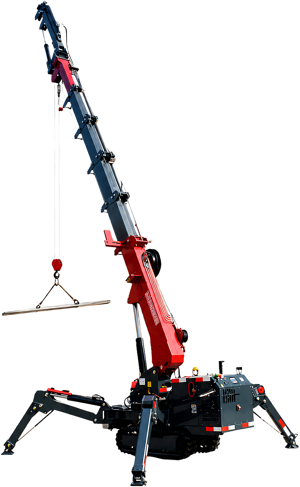

Selezione 2026 per Italia / UE
Macchine compatte selezionate in Cina per il mercato italiano
Mini gru cingolate, mini escavatori e mini pale selezionati direttamente sul posto, con produttori verificati, documentazione CE/UE disponibile, configurazioni controllate e condizioni commerciali trattate alla fonte.
Una gamma pronta per chi vuole acquistare dalla Cina con più controllo, più chiarezza e meno passaggi inutili.
- 12
- modelli selezionati
- 3
- famiglie di macchine
- CE / UE
- documentazione disponibile
- 12 mesi
- garanzia difetti di fabbricazione

Mini gru cingolata
3T / 4T / 5T
TONLITA machinery
Una selezione compatta per sollevamento, scavo e movimentazione
Ogni macchina è selezionata per offrire un buon equilibrio tra prezzo, configurazione, qualità costruttiva e possibilità di importazione nel mercato italiano ed europeo.
Il vantaggio non è solo comprare dalla Cina. Il vantaggio è sapere da chi comprare, cosa controllare e quali condizioni ottenere prima dell'ordine.
Gamma prodotti
Macchine compatte per lavori difficili

01
Mini gru cingolate
Tre modelli da 3, 4 e 5 tonnellate per vetri, montaggi, cantieri, manutenzioni e lavori dove servono compattezza, stabilità e precisione.

02
Mini escavatori
Mini escavatori da 800 a 2.400 kg per scavi leggeri, edilizia, giardinaggio, ristrutturazioni e lavori in spazi ridotti.

03
Mini pale cingolate
Mini pale compatte con benna frontale, portate fino a 650 kg e ingombri ridotti per edilizia, movimentazione materiali, giardinaggio e manutenzione.
Catalogo selezionato
I 12 modelli disponibili nella selezione 2026
Tutti i prodotti sono organizzati in modo semplice per aiutarti a confrontare rapidamente portata, peso, motore, dimensioni e caratteristiche principali.
Selezione e controllo
Selezione già verificata
Questi modelli non arrivano da una semplice lista online. La selezione nasce da presenza diretta in Cina, confronto con i produttori, controllo delle configurazioni e verifica della documentazione disponibile.
Il cliente italiano non parte da zero: trova una gamma filtrata, condizioni commerciali gestite alla fonte e un referente che segue la comunicazione con il produttore.
Gamma selezionata
La selezione comprende solo i modelli presenti nel catalogo 2026: mini gru cingolate, mini escavatori e mini pale compatte.
Produttori verificati
I contatti con i produttori sono diretti. Macchine, configurazioni e condizioni commerciali si valutano prima di proporre la gamma al mercato italiano.
Documentazione CE / UE
La documentazione CE/UE è disponibile per i modelli selezionati e viene controllata prima dell'ordine in base alla macchina e alla configurazione richiesta.
Garanzia e supporto
Garanzia 12 mesi sui difetti di fabbricazione e supporto da remoto per chiarimenti, ricambi, uso della macchina e comunicazione con il produttore.
Foto reali in azienda
Controllo qualità e supervisione


Controllo sul territorio
Comprare dalla Cina non deve significare comprare alla cieca
Il vero valore è il controllo prima dell'ordine.
Prima di confermare una macchina, vengono verificati modello, configurazione, motore, dotazioni, documentazione disponibile, condizioni commerciali e costi da considerare.
In questo modo il cliente riceve una proposta più chiara, più completa e più facile da valutare.
Export internazionale
Macchine compatte per clienti internazionali
La gamma è pensata per importatori, rivenditori, imprese edili, noleggiatori e operatori che cercano macchine compatte con buon rapporto tra prezzo, configurazione e supporto.
Le macchine TONLITA sono proposte in diversi mercati internazionali e vengono selezionate per clienti che cercano soluzioni compatte, pratiche e competitive.
Mercati con presenza export
Altri mercati
Europe
North America
Australia
South America
Africa
Southeast Asia
Middle East
Acquisto e importazione
Un referente italiano tra cliente, fabbrica e documentazione
Gianluca Musotti segue il cliente italiano nella scelta del modello, nel controllo dell'offerta e nel coordinamento con il produttore cinese.
L'obiettivo è rendere l'acquisto più chiaro prima dell'ordine: macchina, configurazione, dotazioni, prezzo, documentazione disponibile, tempi indicativi e supporto dopo l'acquisto.
- 01 Gamma pronta Dodici modelli selezionati: mini gru cingolate, mini escavatori e mini pale compatte.
- 02 Contatto diretto con la Cina Rapporto diretto con i produttori e condizioni commerciali trattate alla fonte.
- 03 Controllo prima dell'ordine Verifica di modello, motore, dotazioni, accessori, documentazione disponibile e costi da considerare.
- 04 Supporto dopo l'acquisto Assistenza da remoto per chiarimenti tecnici, garanzia, ricambi e comunicazione con il produttore.
Richiesta commerciale
Richiedi il listino aggiornato e verifica il modello più adatto
Indica la macchina che ti interessa e ricevi informazioni chiare su prezzo, configurazione, dotazioni, tempi indicativi e documentazione disponibile.
Puoi richiedere il listino via email o scrivere direttamente su WhatsApp.
Gianluca Musotti
Referente commerciale per clienti italiani
gianluca.musotti@tonlita.com
WhatsApp: +39 351 0950470